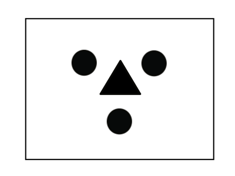

3 and 6 fold Symmetry
3 and 6 fold symmetries incur rotations of 120° and 60° respectively. The symbol for a three fold is unsurprisingly a triangle whereas when a 6 fold is observed it is represented by a hexagon.


3 and 6 fold symmetries incur rotations of 120° and 60° respectively. The symbol for a three fold is unsurprisingly a triangle whereas when a 6 fold is observed it is represented by a hexagon.